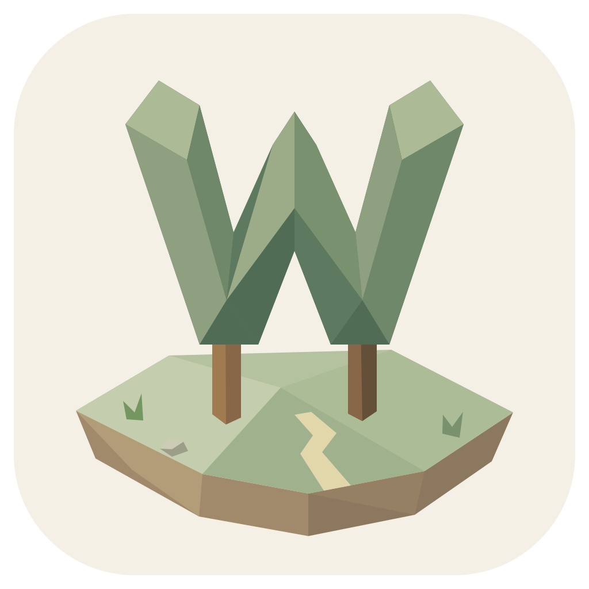
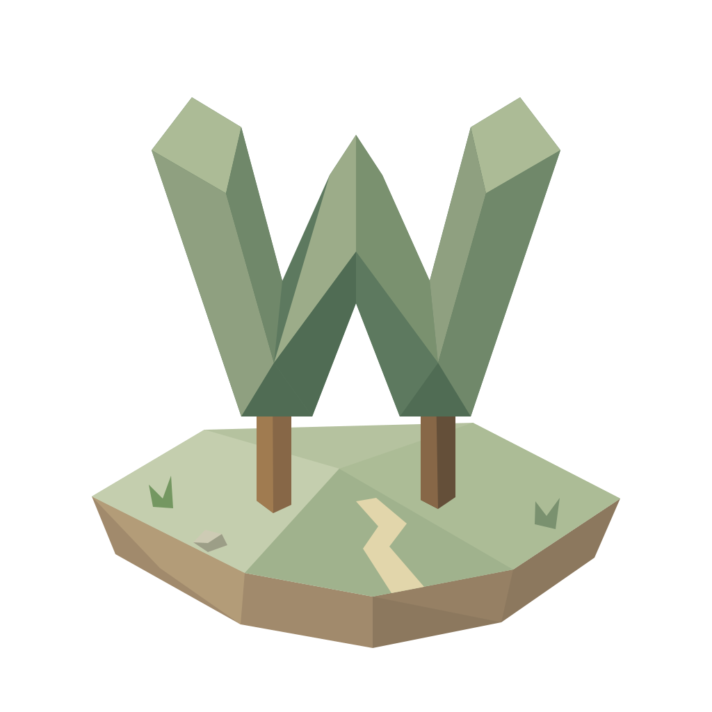

App & browser icon
Mac, installer, browser tabs and touch icons.
The same little world at every size.

WorldletThe W tree and its island are our identity. Forest green, warm paper, and one familiar voice.

Mac, installer, browser tabs and touch icons.
The same little world at every size.
Website, download page and app startup.
Inter · Semibold · Original colors.
One silhouette on a changing scene.
Day and night use their own text contrast.
Brand & actions
Reading & surfaces
Tasks & decisions
Timeline & time
Updates & growth
HUD: 20 / 16 / 14 / 12 px · 400 / 500 / 600 weights
Website headlines scale up. The family and color roles stay familiar.